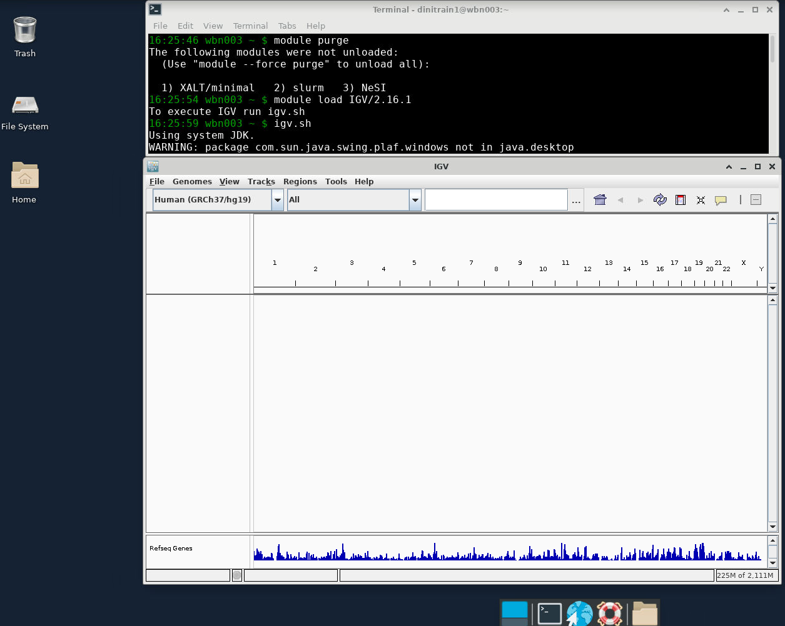

6. Assembly Cleanup & Genome Annotation¶
Assembly Cleanup¶
Once you have a genome, and you think you want to hold onto it for a while and start doing actual analysis it is time to check it for contamination. In particular, before using and sharing your assembly it is best to make sure that you don't have:
- Contamination from other species
- Lots of contigs for Epstein Barr Virus (EBV) or mitochondrial sequence
- Adapters embedded in your contigs
When you upload your assembly to Genbank, the sequence is automatically screen for contaminants and if anything is found you have to fix it and upload the fixed assembly. It's much better to take a look on your end. Luckily NCBI has released a toolkit that can be run locally. There are tools to look find/fix adapter sequences in your assembly (fcs-adapter) and for finding/fixing foreign genomic contamination (fcs-gx). We will be running fcs-gx, so let's look at the steps that fcs-gx runs.
- Repeat and low-complexity sequence masking
- Alignment to reference database using GX aligner
- Alignment refinement with high-scoring taxa matches
- Classifying sequences to assign taxonomic divisions
- Generating contaminant cleaning actions
With that understanding, we are ready to test it out for ourselves...
Make a directory
Download the Foreign Contamination Screen (FCS) tool from NCBI
code
This tool is a python script that calls a Docker/Singularity container. This was done because contamination screens notoriously require a ton of dependencies. So having a Docker container makes things easier on the user. The docker container requires that a database of contaminants are downloaded. We have already downloaded the test database here: /nesi/nobackup/nesi02659/LRA/resources/fcs/test-only. The container has already been downloaded as well, we just need to load the singularity module and let FCS know where the container is:
code
Now we can run the test data
Note that the test data is not human (this matters for the --tax-id parameter).
code
Here is what is printed to the screen
tax-id : 6973
fasta : /sample-volume/fcsgx_test.fa.gz
size : 8.55 MiB
split-fa : True
BLAST-div : roaches
gx-div : anml:insects
w/same-tax: True
bin-dir : /app/bin
gx-db : /app/db/gxdb/test-only/test-only.gxi
gx-ver : Mar 10 2023 15:34:33; git:v0.4.0-3-g8096f62
output : /output-volume//fcsgx_test.fa.6973.taxonomy.rpt
--------------------------------------------------------------------
GX requires the database to be entirely in RAM to avoid thrashing.
Consider placing the database files in a non-swappable tmpfs or ramfs.
See https://github.com/ncbi/fcs/wiki/FCS-GX for details.
Will prefetch (vmtouch) the database pages to have the OS cache them in main memory.
Prefetching /app/db/gxdb/test-only/test-only.gxs 99%...
Prefetched /app/db/gxdb/test-only/test-only.gxs in 0.243985s; 0.290255 GB/s. The file is 100% in RAM.
Prefetching /app/db/gxdb/test-only/test-only.gxi 99%...
Prefetched /app/db/gxdb/test-only/test-only.gxi in 7.24798s; 0.62397 GB/s. The file is 100% in RAM.
Collecting masking statistics...
Collected masking stats: 0.0295689 Gbp; 3.21688s; 9.19177 Mbp/s. Baseline: 1.0774
28.2MiB 0:00:20 [1.34MiB/s] [1.34MiB/s] [==========================================================================] 102%
Processed 714 queries, 29.1754Mbp in 14.3783s. (2.02913Mbp/s); num-jobs:294
Warning: asserted div 'anml:insects' is not represented in the output!
--------------------------------------------------------------------------------------------------
Warning: Asserted tax-div 'anml:insects' is well-represented in db, but absent from inferred-primary-divs.
This means that either asserted tax-div is incorrect, or the input is predominantly contamination.
Will trust the asserted div and treat inferred-primary-divs as contaminants.
--------------------------------------------------------------------------------------------------
Asserted div : anml:insects
Inferred primary-divs : ['prok:CFB group bacteria']
Corrected primary-divs : ['anml:insects']
Putative contaminant divs : ['prok:CFB group bacteria']
Aggregate coverage : 51%
Minimum contam. coverage : 30%
--------------------------------------------------------------------
fcs_gx_report.txt contamination summary:
----------------------------------------
seqs bases
----- ----------
TOTAL 243 27170378
----- ----- ----------
prok:CFB group bacteria 243 27170378
--------------------------------------------------------------------
fcs_gx_report.txt action summary:
---------------------------------
seqs bases
----- ----------
TOTAL 243 27170378
----- ----- ----------
EXCLUDE 214 25795430
REVIEW 29 1374948
--------------------------------------------------------------------
There is a file created called something like *fcs_gx_report.txt. Open it in your terminal, or if it's easier you can view it on the FCS GitHub.
Here's how you would run your actual data
We will copy over our prebaked Hifiasm trio assembly (maternal haplotype) and create a slurm script...
cp /nesi/nobackup/nesi02659/LRA/resources/assemblies/hifiasm/full/trio/HG002.mat.fa.gz .
nano fcs_full.sl
#!/bin/bash -e
#SBATCH --account nesi02659
#SBATCH --job-name test_fcs
#SBATCH --cpus-per-task 24
#SBATCH --time 03:00:00
#SBATCH --mem 460G
#SBATCH --output slurmlogs/test.slurmoutput.%x.%j.log
#SBATCH --error slurmlogs/test.slurmoutput.%x.%j.err
## load modules
module purge
module load Python/3.7.3-gimkl-2018b
module load Singularity/3.11.3
export FCS_DEFAULT_IMAGE=/opt/nesi/containers/fcs/fcs-gx-0.4.0.sif
python3 ./fcs.py \
screen genome \
--fasta ./HG002.mat.fa.gz \
--out-dir ./asm_fcs_output \
--gx-db /nesi/nobackup/nesi02659/LRA/resources/fcs/gxdb \
--tax-id 9606
We've run this for you, and you can find the results here:
Genome Annotation¶
A genome assembly—even a very good one—is of limited utility without annotation to provide context about the raw bases. Broadly speaking, an annotation is any information about some region of the genome, e.g., the GC% in a given window or whether and in which way a particular region is repetitive. Accordingly, annotation techniques, computational resources, input requirements, and output formats can vary widely. However, the term "annotation" typically refers to the more specific case of locating the protein-coding genes, ideally specifying features such as exon-intron boundaries, untranslated regions (UTRs), splice variants, etc. Accordingly, we will focus on this type of annotation here.
When annotating genes, many methods and tools are available, depending on your objective. When planning a project, you might ask yourself: Do I want structural annotation, functional annotation, or both? Do I want to locate genes using de novo prediction models, transcript- or RNA-seq-based evidence, or both? Do I have a reliable source of annotations from the assembly of a related genome? Do I have a collaborator willing and able to perform the annotation for me?
A full discussion or tutorial covering the various scenarios is beyond the scope of this workshop, but pipelines like MAKER (Holt and Yandell, 2011; doi: 10.1186/1471-2105-12-491) can be configured to do many of these things, though installing all necessary dependencies can be challenging in some circumstances. Many tools also assume short reads (e.g., when using RNA-seq evidence), and incorporating information from long-read sources may require adjustments.
Here we will get a taste for annotation with one popular tool: Liftoff, which makes use of another genome assembly with annotations you wish to "copy" onto your assembly.
What is the easiest way to annotate my genome of interest ?
The easiest way to get a genome annotated is to have someone else do it. If sharing data with NCBI is possible and your assembly is the best option to represent your species of interest, they may be willing to annotate your genome for you using their pipeline. Otherwise, finding a collaborator with expertise is a good option.
What are the most common formats for sharing annotation data ?
The most common formats are BED (Browser Extensible Data), GFF (Generic Feature Format; v3), GTF (General Transfer Format; a.k.a., deprecated GFF v2), and custom TSV (tab-separated value). Wiggle format and its variants are also common for displaying information in a genome browser.
Which tool(s) should I use for my project ?
Annotation is a complex problem, and no single tool exists that can be universally recommended. A high-quality annotation plan often requires the use of may tools and/or complex pipelines, and the installation of many of these tools can be complicated, even for expert command-line users. Generally speaking, following the best-practice of those in your field or who work on the same taxa is a reasonable option. In some cases, tools specific to some set of organisms have been developed (e.g., Funannotate for fungi). Recently, the BRAKER team released version 3 of their pipeline for gene structure prediction (wrapping GeneMark-ES/ET & AUGUSTUS). If you have a trustworthy source of annotations from another assembly, you can consider Liftoff and CAT. InterProScan can give you functional annotations relatively quickly. If you are able to share your data with NCBI and your assembly is the best assembly (or if the community agrees it is otherwise preferred), the NCBI annotation team will annotate it for you using their automated pipeline. GFF3 Toolkit can be useful when working with GFF3 files, and gFACs can help with filtering, analysis, and conversion tasks.
How can I learn more about annotation ?
Please consider the following sources:
-
Review of eukaryotic genome annotation written for beginners (Yandell and Ence, 2012; doi: 10.1038/nrg3174)
-
Review of assembly and annotation written for conservation geneticists and assuming limited understanding of bioinformatics and high-throughput sequencing (Ekblom and Wolf, 2014; doi: 10.1111/eva.12178)
-
Review of structural and functional annotation, providing definitions and the limitations of annotation (Mudge and Harrow, 2016; doi: 10.1038/nrg.2016.119)
-
Protocol (from protocols.io) for de novo annotation using the MAKER pipeline. This is annotation "in the wild" describing actual steps taken if not the justification for them, but it is based on this 2018 tutorial by the developers of MAKER. The protocol was used to annotate a non-model fish genome (Pickett and Talma et al., 2022; doi: 10.46471/gigabyte.44).
Annotation with Liftoff¶
According to the Liftoff GitHub Repository:
Liftoff is a tool that accurately maps annotations in GFF or GTF between assemblies of the same, or closely-related species. Unlike current coordinate lift-over tools which require a pre-generated "chain" file as input, Liftoff is a standalone tool that takes two genome assemblies and a reference annotation as input and outputs an annotation of the target genome. Liftoff uses Minimap2 (Li, 2018; doi: 10.1093/bioinformatics/bty191) to align the gene sequences from a reference genome to the target genome. Rather than aligning whole genomes, aligning only the gene sequences allows genes to be lifted over even if there are many structural differences between the two genomes. For each gene, Liftoff finds the alignments of the exons that maximize sequence identity while preserving the transcript and gene structure. If two genes incorrectly map to overlapping loci, Liftoff determines which gene is most-likely mis-mapped, and attempts to re-map it. Liftoff can also find additional gene copies present in the target assembly that are not annotated in the reference.
We will use Liftoff (doi: 10.1093/bioinformatics/btaa1016) to lift over the annotations from the T2T-CHM13 reference assembly to our assembly of HG002.
Create directory
Gather the necessary files
code
ln -s /nesi/nobackup/nesi02659/LRA/resources/chm13/CHM13-T2T.renamed.gff.gz chm13-annotations.gff.gz
ln -s /nesi/nobackup/nesi02659/LRA/resources/chm13/CHM13-T2T.renamed.gff.liftoff.sqlite3 chm13-annotations.gff.liftoff.sqlite3
ln -s /nesi/nobackup/nesi02659/LRA/resources/chm13/chm13v2.0.fa chm13.fa
ln -s /nesi/nobackup/nesi02659/LRA/resources/chm13/chm13v2.0.fa.fai chm13.fa.fai
ln -s /nesi/nobackup/nesi02659/LRA/resources/assemblies/verkko/full/trio/assembly/assembly.haplotype1.fasta asm.hap1.fa
ln -s /nesi/nobackup/nesi02659/LRA/resources/assemblies/verkko/full/trio/assembly/assembly.haplotype1.fasta.fai asm.hap1.fa.fai
What's with the *.sqlite3 file?
Liftoff stores features from the GFF file in a SQLite database. The first
part of any liftoff run processes the GFF file and creates the database,
which by default is written to the same file location and name with a
.gz appended to the end. If you experience an error at any
point (e.g., failing to allocate enough memory to your job), liftoff will
automatically re-create the database, even if that part of the process
completed successfully previously. This SQLite database is from a previous
run we did, and we’ll use it in place of the GFF file to shave some
time (~10 mins for a full human genome) during our run. If you run
liftoff -h, you’ll see that -g (to provide
the input GFF file) and -db (to provide the input SQLite
database) are interchangeable. We’ll be using the database to save
time, but we could instead use the other option and supply the GFF file.
If you haven’t yet viewed a GFF file, now would be a good time to
check one out:
Run Liftoff
First create a shell script liftoff.sh with the following content:
code
What do each of these options do?
-p specifies the number of threads to use.
-db specifies the location of the SQLite database of features extracted by Liftoff from the GFF file with the input annotations for the reference.
-o specifies the location of the GFF file with the output annotations for the target.
The two positional parameters at the end are respectively the target assembly (our HG002 assembly) and the reference assembly (T2T-CHM13). Run the following command to see all the options described in more detail:
liftoff -h
This will probably take ~1 hour with 8 CPUs and 48 GB of memory. You could submit it as a job; however, we will pull pre-baked results for the next step.
How to submit Liftoff with sbatch
To skip the run-time, let’s grab the pre-baked results:
Look at the output GFF3 file
You could also explore the files in Liftoff's intermediate directory
(/nesi/nobackup/nesi02659/LRA/resources/liftoff/intermediate_files) or the
unmapped features
(/nesi/nobackup/nesi02659/LRA/resources/liftoff/unmapped_features.txt).
Visualize the annotations in a genome browser
Before we visualize the annotations in IGV, it is best if we sort and index the output GFF file:
code
These operations are small enough that you should not need to submit a job for them.
To open IGV and view the annotations, do the following:
- Open IGV
- Open a Virtual Desktop according to these instructions
- Open the Terminal Emulator application
- Load the IGV module and launch IGV 
- Load the HG002 hap1 genome (instead of the default hg19): Genome > Load Genome from File... >
asm.hap1.fa - Load the GFF file: File > Load from File... >
asm.hap1.annotations.sorted.gff - Explore
{kind=link}
What do you observe? Do you have any questions?
Long Read/Contig Mapping¶
We are ready to map long reads and assembly contigs to genomes. For this we need a set of tools that are different from what you might be used to using for Illumina data. You might be asking "what's the matter with bwa-mem for long reads?" It is slow and probably inaccurate for this application. So let's jump in to long read mappers and see what we can do with them.
Mashmap: Super Fast (Approximate) Mapping¶
The first thing we would like to do is to find out how our assembled genome compares to the T2T genome CHM13.
If we can map our assembly quickly onto CHM13, we can answer questions like:
- Which contigs correspond to chr1?
- How many of my contigs are T2T assembled?
- Are we seeing any large duplications or missing regions?
MashMap is a super fast mapper that is commonly used for these kinds of questions. MashMap doesn't seed and extend, it takes sequences and plays tricks with kmers. Loosely speaking if you take a sequence and get all of its kmers of a certain size and then sort those kmers, you can do a lot with just the "smallest" kmer (this is called a minimizer). MashMap uses a set of those smallest kmers to say: this sequence here and my query sequence share a lot of smallest kmers. The output of MashMap is an approximation of read position and identity. Let's actually use it now to align our asembly to CHM13 and we will use the results to map our contigs onto chromosomes and to try and find some T2T chromosomes in our assemblies.
Create A Directory
Link the files we need
code
We are going to use CHM13 v2.0 (which includes a Y chromosome)
as well as haplotype 1 from our Verkko trio assemblyRun MashMap
code
Take a look at the parameters for MashMap. What are -f, --pi, and -s ?
--pi is the percent identity. The default value is 85 which means that mappings with 85% or more identity should be reported.
-s is the segment length. MasMap will not report segments under this value.
-f is the filter mode. After MashMap identifies mappings, it can go through and filter to ensure only the best mapping is reported (if we pass "map") or in our case that all good mappings are reported (if we pass "one-to-one").
Why did we use the values that we used for --pi and -s ?
Since we are mapping a human assembly against another human assembly we expect the sequences to be very similar. This is why we overwrote the default value of 85 for --pi. If we were to use the default value for -s (5000) then we would likely see a lot of hits from homologous regions. This may be interesting, but if we want to know how good our assembly is extra hits will just confuse things.
Once the mapping is done, let's take a look at the output.
Note that the output is similar to the Paired Alignment Format, or PAF, and has the following columns:
- query name
- length
- 0-based start
- end
- strand
- target name
- length
- start
- end
- mapping nucleotide identity (estimate)
The most recent versions of MashMap actually output PAF by defalt. But not the version we are using here.
Now generate a dot plot of the alignment
And take a look at it (you can click on it in your file explorer).
Does anything stick out to you ?
There is no sequence in the assembly mapping to chrY. This makes sense as this is the maternal haplotype's assembly.
Exercise: Can We Find Any Contigs/Scaffolds That Are T2T?
Look through the dotplot to try and identify a contig or two that are assembled T2T. Once you've done that we will have to bring in another tool to make sure that there are actually telomeric repeats on the 5' and 3' ends. (Some people care about the presence of telomeric repeats when defining what T2T means.)
Run the telo tool from seqtk to identify (human) telomeric ends:
Now look through the bed file and find the contig you are interested in to see if there are telomeres on both ends.
Did you find any T2T contigs or Scaffolds ?
In this assembly chromosomes 3, 10, 11, and 16 are assembled T2T with contigs (no gaps) and chr5 is assembled T2T in a scaffold. As of the writing of this document (June 2023) for a diploid human assembly you can expect to get around 12 chromosomes assembled T2T in contigs and an additional 12 or so assembled T2T in scaffolds with Verkko. Hifiasm is very similar but without scaffolds. This means that for a diploid verkko assembly about half of the chromosomes are T2T out of the box for ~40X HiFi and >15X (or so) UL ONT with either HiC or trio phasing. Pretty amazing. This sample (HG002) is not very heterozygous so it's actually a tough sample to assemble. That is why we aren't seeing very many T2T contigs/scaffolds. Sometimes you have to judge how good an assembly is on a per-sample basis.
Closing notes
-
This could all be automated, of course. The T2T and HPRC consortiums have workflows that go through assemblies to determine T2T status at the chromosomal level, but those workflows are pretty similar to what we did above, actually.
-
Not having base-level information is actually ok for what we just did. If you would like base level information at only a few fold of the run cost of mashmap (so still very fast), then you probably want to check out wfmash. It can be used for alignments of long reads (100kb+) or assemblies at very large scales.
Minimap2:¶
If you are mapping long read data and you'd like to have base-level alignment, minimap2 is probably your first stop.
Today we are going to use minimap2 to align ONT reads that have 5mC information stored in Mm/Ml tags to our diploid assembly.
Create A Directory
Copy over our Verkko trio assembly
We are going to use the diploid version of our Verkko trio assembly. (This just means that the maternal and paternal haplotypes are both included in the fasta.)
code
Create a minimap2 slurm script
Open your favourite text editor
And paste in the following
code
#!/bin/bash -e
#SBATCH --account nesi02659
#SBATCH --job-name minimap2-ont
#SBATCH --cpus-per-task 48
#SBATCH --time 05:00:00
#SBATCH --mem 128G
#SBATCH --partition milan
#SBATCH --output slurmlogs/%x.%j.log
#SBATCH --error slurmlogs/%x.%j.err
## load modules
module purge
module load minimap2/2.24-GCC-11.3.0
module load SAMtools/1.16.1-GCC-11.3.0
## Create minimap2 index of our diploid assembly
minimap2 \
-k 17 \
-I 8G \
-d verkko_trio_diploid.fa.mmi \
verkko_trio_diploid.fa
## minimap parameters appropriate for nanopore
in_args="-y -x map-ont --MD --eqx --cs -Y -L -p0.1 -a -k 17 -K 10g"
#do the mapping with methylation tags by dumping the Mm/Ml tags to the fastq headers
samtools fastq \
-TMm,Ml /nesi/nobackup/nesi02659/LRA/resources/ont_ul/03_08_22_R941_HG002_2_Guppy_6.1.2_5mc_cg_prom_sup.bam \
| minimap2 -t 24 ${in_args} verkko_trio_diploid.fa.mmi - \
| samtools view -@ 24 -bh - \
| samtools sort -@ 24 - > \
verkko_trio_diploid.mm2.5mC.bam
samtools index verkko_trio_diploid.mm2.5mC.bam
Terminal
This should take only 3 hours or so, but we have some pre-baked results for you already. We will use these results in the next section.
Why did we align to the diploid version of our assembly ?
The traditional thing to do is to align your data to a haploid or pseudo-haploid assembly like CHM13 or GRCh38. We are diploid individuals, though. And for some use cases we want to align long reads to a diploid assembly in order to have the reads segregate by haplotype. When we are aligning a samples reads to its own assembly this is especially important.
Visualize The Alignments In IGV¶
Before switching over to your virtual desktop, link the prerun alignments to your working directory
code
Now view the alignments in IGV
- Open an IGV window as you did above. Don't forget to
module load IGV/2.16.1(we need v 2.14 or greater) - We need to use our assembly as the genome file. Do that by clicking the Genomes dropdown at the top and then select Load Genome From File. Navigate to your folder and select the Verkko trio genome that we copied in.
- Load the 5mC bam by clicking on the File dropdown then selecting Load From File
- Show the methylation predictions by right clicking on the alignment track and selecting Color alignments by, then click base modifications (5mc)
Explore the data a bit
Zoom in on a random region that is a few hundred basepairs in size. You can see the methylation levels in the track histogram and in the reads themselves. Red is methylated and blue is unmethylated.
If you are familiar with ONT data already you know that ONT and PacBio have the ability to detect base modifications without any additional steps like bisulfite conversion. What we are adding here is the ability to look at methylation in the context of a sample's own assembly. Maybe that wouldn't matter if you are looking at regions of the genome which are structurally consistent across samples—like promoters for well known genes.
Take a look around mat-0000038 (this is the biggest contig that maps to chrX).
Why did we choose to show you an example in chrX ?
In male samples chrX is haploid, so outside of the psuedoautosomal, or PAR, regions we don't have to worry about whether or not our reads map to the correct haplotype.
What would have happened if we had just aligned this data to CHM13 ?
Centromeres are highly repetitive and alpha satellite arrays can vary from individual to individual in size by more than a factor of two. So aligning centromeric reads from one individual to another individual's assembly is an inherently dodgy proposition.